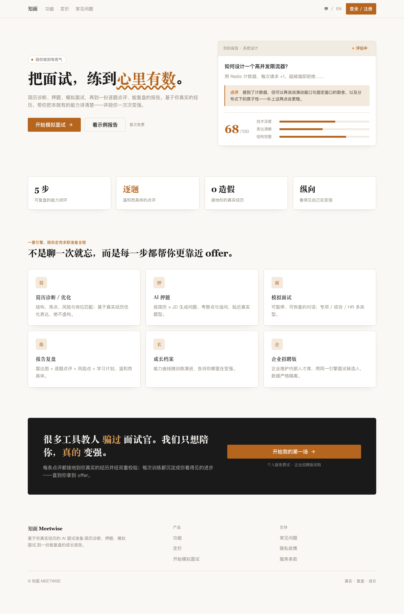
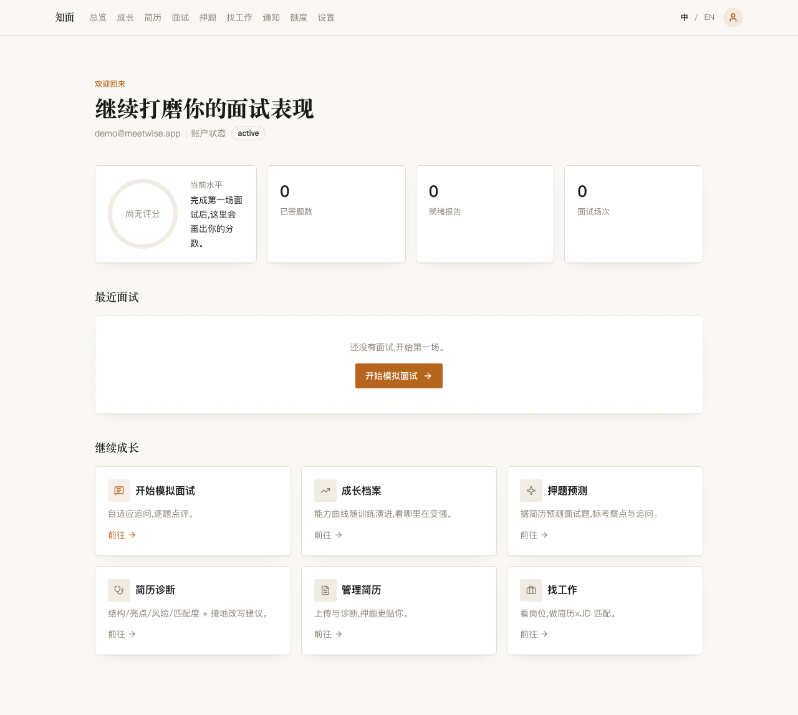
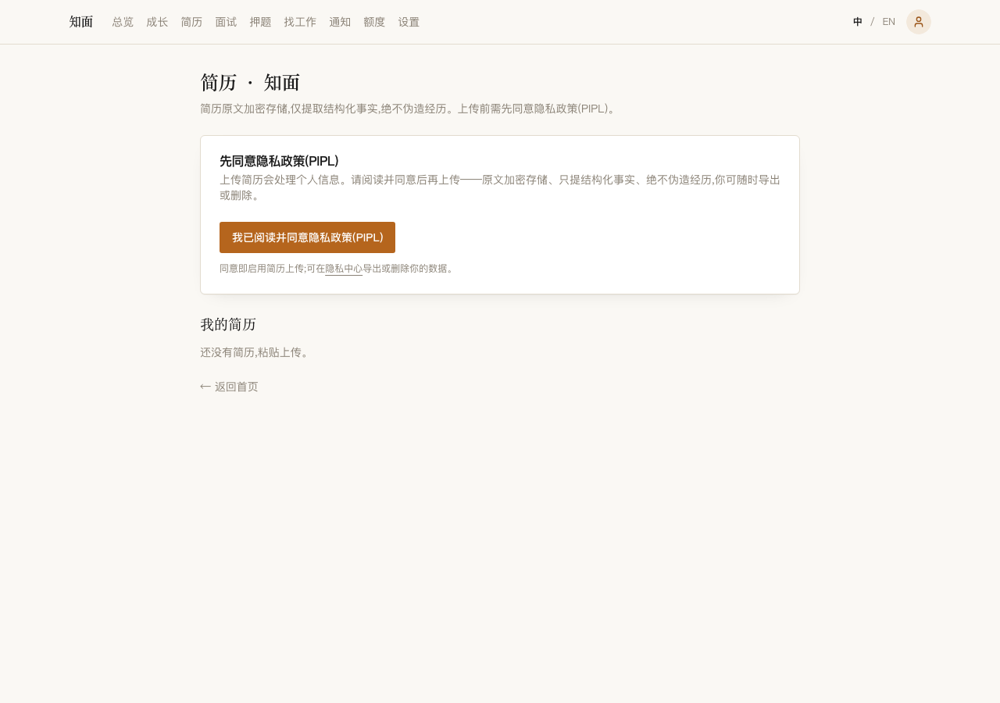
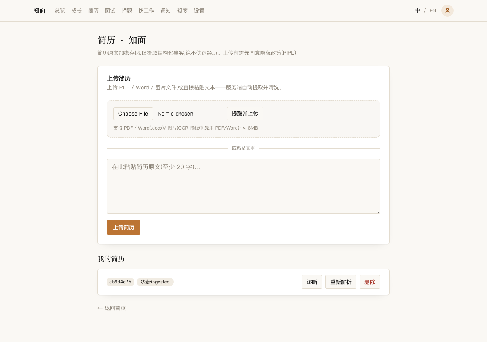
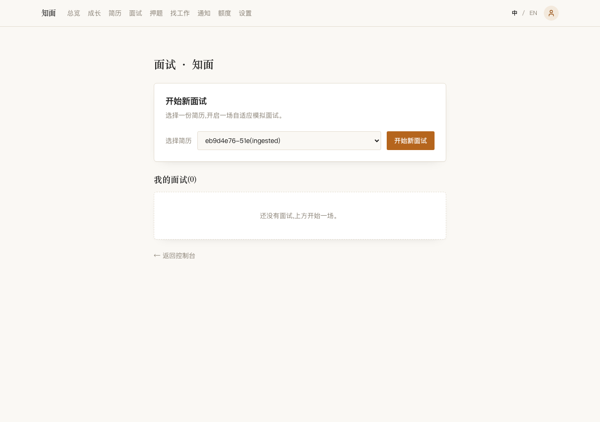
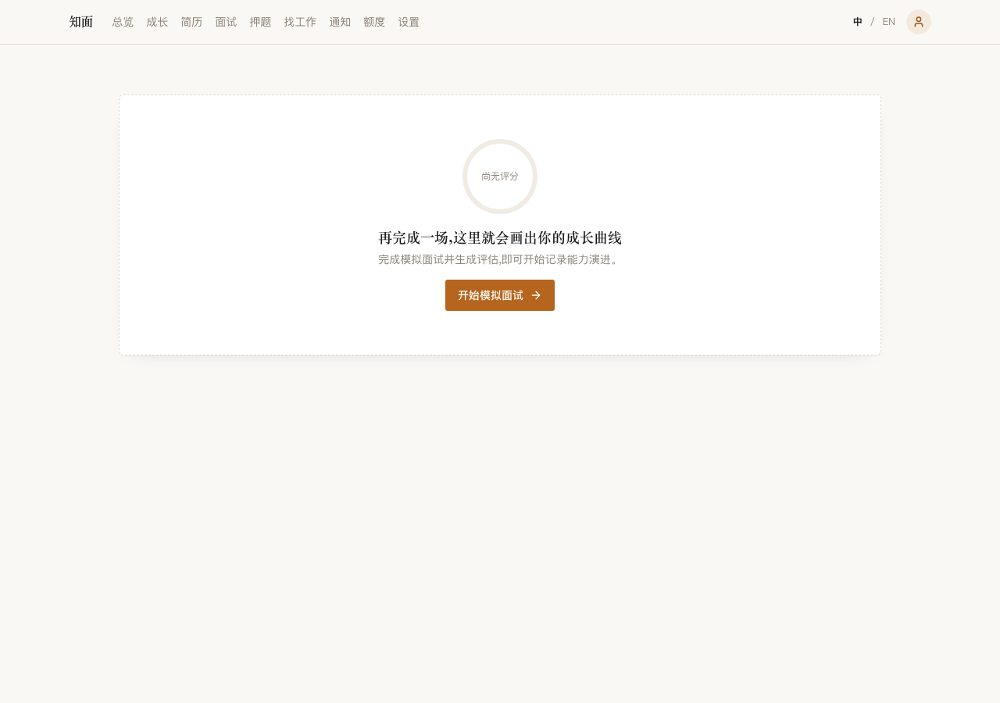

01
真实经历
简历和项目是练习素材。改的是说法，不是履历。
只练你写过的事
下一题看你怎么答
不夸大、不代答
点评能回头看
简历和项目是练习素材。改的是说法，不是履历。
文字练习会顺着你的回答往下问。公开预览不收真实回答。
逐题点评给自己看。不构成能力认证，也不能当录用依据。
把经历理清楚，标出结构和风险。公开预览不收真实提交。
按你的经历和目标岗位来问，不是题海。题库还在收口。
文字对练，下一题跟着你的回答走。语音默认关着。
指出哪里可以补。只供个人复盘，不构成能力认证。
几次练习留在一起。长期画像还没开。
岗位和投递分开看。不会自动筛人、排名或决定录用。
点评给自己复盘用，不代表经校准的能力评定，也不能作为招聘、资格或录用决定的依据。
不提供支付，也不做自动招聘决策。
这些是合成截图，用来看版式。不代表线上已经开放，也不构成能力认证。图里若还写着「开始模拟面试」，以本页文案为准。






本页是项目展示，不是已经部署的在线服务，不启动本地数据面服务，也不经手你的简历或回答。